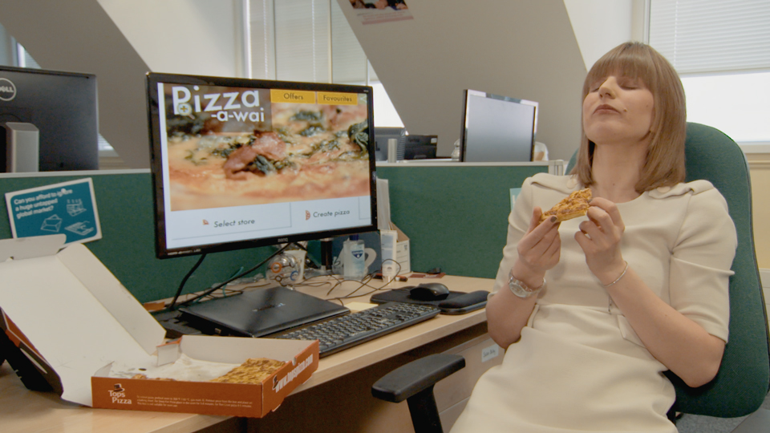

Web Accessibility Perspectives:
Explore the Impact and Benefits for Everyone
Introduction
Web accessibility is essential for people with disabilities and useful for all. Learn about the impact of accessibility and the benefits for everyone in a variety of situations.
Perspectives Videos
 Keyboard Compatibility
Keyboard Compatibility Colors with Good Contrast
Colors with Good Contrast-  Clear Layout and Design
 Text to Speech
Text to Speech Large Links, Buttons, and Controls
Large Links, Buttons, and Controls Video Captions
Video Captions Customizable Text
Customizable Text Voice Recognition
Voice Recognition Understandable Content
Understandable Content Notifications and Feedback
Notifications and Feedback
Learn More about Web Accessibility
This website provides a variety of standards, guidelines, and resources to get you started with web accessibility:
- Introduction to Web Accessibility
- How People with Disabilities Use the Web - outlines users stories, assistive technologies, and accessibility principles
- Getting Started Tips - basic first steps for web designers, writers, and developers
- Business Case - highlights arguments, including social, technical, financial, and legal factors
- Web Accessibility Tutorials - more in-depth guidance for developing accessible web content